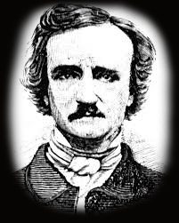

Glavna tema novele Pad kuće Ašer je smrt lepe žene. Po se u priči dotakao graničnih područja nauke u kojoj se mešaju natprirodni i tajanstveni događaji, događaji koji se ne mogu naučno protumačiti.
No, u priči ima i simbolike. Smrt je simbol pobede sna nad javom; čovekove poslednje borbe da se oslobodi tela ili stvarnosti koja ga okružuje, nakon čega ga čeka smirenje. Kuća (dvorac) je identifikovana sa likovima. To se može videti u situaciji kada umre Medlina, jer tada mora da umre i Roderik, a sa njima se ruši i dvorac, kao simbol jedinstva.
Kao motive u toj pripovetki Poe koristi stari dvorac, podzemne hodnike, strah, jezu, smrt, mračna duševna stanja likova, raskošne enterijere, duboko i tajanstveno jezero, oluju i natprirodni i tajanstveni događaj. Prizori u kući sačinjeni su od pokreta i tmurnih boja, dakle slika. Tako je zanimljiva slika Ašerovog dvorca koji se cepa, i kroz pukotinu nam otkriva mesec na nebu.
Jašući celog dana, pripovjedač u predvečerje stiže pred dvorac Ašerovih: Osetih lednost, propadanje, gnušanje u srcu. Kuća je u njemu izazvala sumorno raspoloženje i tjeskobu. Ipak, naš je junak odlučio u njoj provesti nekoliko nedelja. Prihvatio je poziv svog prijatelja iz detinjstva, želeći da mu svojim društvom olakša bolest. Posmatrao je staro zdanje i opasno napukli zid, a uzbudilo ga je tiho i duboko jezero oko dvorca. Ušao je u dvorac i u njegove mračne odaje. Sve mu se činilo mračno i tužno.
Atmosfera tog starog zdanja odgovarala je duševnom stanju njegovih stanovnika. Roderiku Ašeru i njegovoj sestri bliznakinji Medlin.Roderik je, iako intelektualac, bio nervno rastrojen, melanholičan i hvatao ga je strah od budućnosti. Njegova sestra Medlina imala je česte napade bolesti ukočenosti mišića, bolesti koja je zbunjivala i lekare. Osamila se i nije želela društvo.
Pripovedač se svesrdno trudio da ublaži melanholiju Ašeru. Zajedno su čitali mistične knjige i slikali. Ašer je želeo da naslika ideju – idealnu lepotu povezati sa stravom. Voleo je da svira gitaru i smišlja nove i fantastične performanse. Boraveći sa prijateljem, pripovedač je shvatio da je Roderik povezan sa atmosferom dvorca, stablima koja ga okružuju i mirnim jezerom.
Jednog dana Ašer je obavestio gosta da Medlina više nema među živima, i da će, prema tadašnjem obrednom običaju, telo čuvati četrnaest dana u podrumu zgrade pre konačne sahrane. Namestili smo poklopac i zavrteli ga, pa zatvorivši gvozdena vrata, krenusmo, s naporom, u ne manje sumorne gornje kućne odaje.

Edgar Alan Po rođen je 1809. godine u Bostonu, kao srednje od troje dece.
Otac mu je bio advokat, koji počinje da se bavi glumom, oženivši se engleskom glumicom. Oba roditelja mu umiru 1811. godine od tuberkuloze.
Kada su mu bile tri godine, Edgara je u svoj dom primio imućniji škotski trgovac Džon Alan, čije je prezime Edgar kasnije dodao svom. Od 1815. do 1820. godine, Alanovi žive u Engleskoj. Vrativši se u SAD, Edgara upisuju na Virdžinijski univerzitet, gde Edgar počinje da se opija, karta i zadužuje. Saznavši to, očuh ga ispisuje sa univerziteta i zapošljava kao činovnika.
Ostavši na ulici, Edgar pokušava da zaradi izdavanjem zbirke pesama Pesme. No, to mu ne uspeva, pa se seli u Baltimor kod svoje tetke. Počinje da se bavi novinarstvom, a 1835. godine ženi se svojom rođakom od 13 godina, Virdžinijom Klem.
Seli se u Njujork, Filadelfiju, pa se, ne postigavši mnogo, opet vraća u Njujork. 1847. godine umire njegova žena Virdžinija. Verovatno osećajući svoj skori kraj, Edgar zapada u misticizam koji kulminira delom Eureka – transcendentalnim tumačenjem svemira. 1849. godine obećava brak trima ženama. Ne oženivši se ni sa jednom, odlazi u Baltimore i umire. Sahranjen je na lokalnom groblju uz svoju dragu Virdžiniju i svoju svekrvu.
Po je strahovito pogrešio kad je svoju književnu zaostavštinu poverio Rufusu Grizvoldu, osrednjem antologičaru i piscu članaka, koji je Poa mrzeo i bio mu zavidan. Grizvold je nakon Poove smrti učinio sve da ga ocrni, čak je krivotvorio njegova pisma.
Tek je stotinak godina kasnije Artur Hobson Kvin utvrdio netačnost Grizvoldovih tvrdnji o Poovom životu.